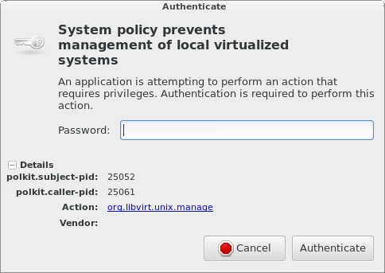

Apparently lots of people are using Vagrant these days, so I figured I’d try it out. I wanted to get it working on Fedora, and without Virtualbox. This is an intro article on Vagrant, and what I’ve done. I did this on Fedora 19. Feel free to suggest improvements.
Intro:
Vagrant is a tool that easily provisions virtual machines, and then kicks off a configuration management deployment like Puppet. It’s often used for development. I’m planning on using it to test some Puppet-Gluster managed GlusterFS clusters.
Installation:
You should already have the base libvirt/QEMU packages already installed (if they’re not already present) and be comfortable with basic virtual machine concepts. If not, come back when you’re ready.
Fedora 20 was supposed to include Vagrant, but I don’t think this happened. In the meantime, I installed the latest x86_64 RPM from the Vagrant download page.
$ mkdir ~/vagrant
$ wget http://files.vagrantup.com/packages/a40522f5fabccb9ddabad03d836e120ff5d14093/vagrant_1.3.5_x86_64.rpm
$ sudo yum install vagrant_1.3.5_x86_64.rpm
EDIT: Please use version 1.3.5 only! The 1.4 series breaks compatibility with a lot of the necessary plugins. You might have success with different versions, but I have not tested them yet.
You’ll probably need some dependencies for the next few steps. Ensure they’re present:
$ sudo yum install libvirt-devel libxslt-devel libxml2-devel
The virsh and virt-manager tools are especially helpful additions. Install those too.
Boxes:
Vagrant has a concept of default “boxes”. These are pre-built images that you download, and use as base images for the virtual machines that you’ll be building. Unfortunately, they are hypervisor specific, and the most commonly available images have been built for Virtualbox. Yuck! To get around this limitation, there is an easy solution.
First we’ll need to install a special Vagrant plugin:
$ sudo yum install qemu-img # depends on this
$ vagrant plugin install vagrant-mutate
EDIT: Note that there is a bug on Fedora 20 that breaks mutate! Feel free to skip over the mutate steps below on Fedora, and use this image instead. You can install it with:
$ vagrant box add centos-6 https://dl.fedoraproject.org/pub/alt/purpleidea/vagrant/centos-6/centos-6.box --provider=libvirt
You’ll have to replace the precise32 name in the below Vagrantfile with centos-6.
END EDIT
Now download an incompatible box. We’ll use the well-known example:
$ vagrant box add precise32 http://files.vagrantup.com/precise32.box
Finally, convert the box so that it’s libvirt compatible:
$ vagrant mutate precise32 libvirt
This plugin can also convert to KVM friendly boxes.
You’ll need to make a working directory for Vagrant and initialize it:
$ mkdir test1
$ cd test1
$ vagrant init precise32
Hypervisor:
I initially tried getting this working with the vagrant-kvm plugin that Fedora 20 will eventually include, but I did not succeed. Instead, I used the vagrant-libvirt plugin:
$ vagrant plugin install vagrant-libvirt
EDIT: I forgot to mention that you’ll need to specify the –provider argument when running vagrant commands. I wrote about how to do this in my second article. You can use –provider=libvirt for each command or include the:
export VAGRANT_DEFAULT_PROVIDER=libvirt
line in your ~/.bashrc file.
END EDIT
I have found a number of issues with it, but I’ll show you which magic knobs I’ve used so that you can replicate my setup. Let me show you my Vagrantfile:
# -*- mode: ruby -*-
# vi: set ft=ruby :
VAGRANTFILE_API_VERSION = "2"
# NOTE: vagrant-libvirt needs to run in series (not in parallel) to avoid
# trying to create the network twice... eg: vagrant up --no-parallel
# alternatively, you can just create the vm's one at a time manually...
Vagrant.configure(VAGRANTFILE_API_VERSION) do |config|
# Every Vagrant virtual environment requires a box to build from
config.vm.box = "precise32" # choose your own!
# List each virtual machine
config.vm.define :vm1 do |vm1|
vm1.vm.network :private_network,
:ip => "192.168.142.101", # choose your own!
:libvirt__network_name => "default" # leave it
end
config.vm.define :vm2 do |vm2|
vm2.vm.network :private_network,
:ip => "192.168.142.102", # choose your own!
:libvirt__network_name => "default" # leave it
end
# Provider-specific configuration
config.vm.provider :libvirt do |libvirt|
libvirt.driver = "qemu"
# leave out host to connect directly with qemu:///system
#libvirt.host = "localhost"
libvirt.connect_via_ssh = false # also needed
libvirt.username = "root"
libvirt.storage_pool_name = "default"
end
# Enable provisioning with Puppet. You might want to use the agent!
config.vm.provision :puppet do |puppet|
puppet.module_path = "modules"
puppet.manifests_path = "manifests"
puppet.manifest_file = "site.pp"
# custom fact
puppet.facter = {
"vagrant" => "1",
}
end
end:libvirt__network_name => "default" needs to always be specified. If you don't specify it, or if you specify a different name, you'll get an error:
```
Call to virDomainCreateWithFlags failed: Network not found: no network with matching name 'default'
```
:libvirt__dhcp_enabled => false you'll see errors:
```
grep: /var/lib/libvirt/dnsmasq/*.leases: No such file or directory
```
As a result, each machine will have two IP addresses.The most common commands you’ll need are:
vagrant init – initialize a directoryvagrant up [machine] – start/build/deploy a machinevagrant ssh – connect to a machinevagrant halt [machine] – stop the machinevagrant destroy [machine] – remove/erase/purge the entire machinePolicyKit (polkit):
At this point you’re probably getting annoyed by having to repeatedly type your password to interact with your VM through libvirt. You’re probably seeing a dialog like this:
|  |
This should look familiar if you’ve used virt-manager before. When you open virt-manager, and it tries to connect to qemu:///system, PolicyKit does the right thing and ensures that you’re allowed to get access to the resource first! The annoying part is that you get repeatedly prompted when you’re using Vagrant, because it is constantly opening up and closing new connections. If you’re comfortable allowing this permanently, you can add a policy file:
[Allow james libvirt management permissions]
Identity=unix-user:james
Action=org.libvirt.unix.manage
ResultAny=yes
ResultInactive=yes
ResultActive=yes
Create this file (you’ll need root) as:
/etc/polkit-1/localauthority/50-local.d/vagrant.pkla
and then shouldn’t experience any more prompts when you try to manage libvirt! You’ll obviously want to replace the james string with whatever user account you’re using. For more information on the format of this file, and to learn other ways to do this read the pkla documentation.
If you want to avoid PolicyKit, you can connect to libvirtd over SSH, however I don’t have sshd running on my laptop, and I wanted to connect directly. The default vagrant-libvirt example demonstrates this method.
Puppet:
Provisioning machines without configuration management wouldn’t be very useful. Thankfully, Vagrant integrates nicely with Puppet. The documentation on this is fairly straightforward, so I won’t cover this part. I show a simple Puppet deployment in my Vagrantfile above, but a more complex setup involving puppet agent and puppetmasterd is possible too.
Conclusion:
Hopefully this makes it easier for you to hack in GNU/Linux land. I look forward to seeing this supported natively in Fedora, but until then, hopefully I’ve helped out with the heavy lifting.
Happy hacking!
James
You can hire James and his team at m9rx corporation.
You can follow James on Mastodon for more frequent updates and other random thoughts.
You can follow James on Twitter for more frequent updates and other random thoughts.
You can support James on GitHub if you'd like to help sustain this kind of content.
You can support James on Patreon if you'd like to help sustain this kind of content.
Your comment has been submitted and will be published if it gets approved.
Click here to see the patch you generated.
{kind=link}
Comments
Nothing yet.
Post a comment